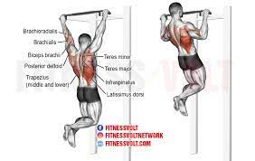

3 series de 8-10 repeticiones.
3 series de 8-10 repeticiones. Usa una barra con pesas adecuadas y mantén una técnica adecuada.
3 series de 10-12 repeticiones. Este ejercicio se puede hacer con una barra T o en una máquina de remo.
3 series de 10-12 repeticiones. Utiliza una barra recta y mantén una buena forma.
3 series de 10-12 repeticiones. Este ejercicio trabaja los bíceps de manera diferente.
3 series de 10-12 repeticiones. Este ejercicio se centra en la parte superior de los bíceps.

3 series de 8-10 repeticiones. Este ejercicio trabaja los deltoides.
3 series de 10-12 repeticiones. Trabaja los deltoides laterales.
3 series de 10-12 repeticiones. Este ejercicio se enfoca en la parte posterior de los hombros.